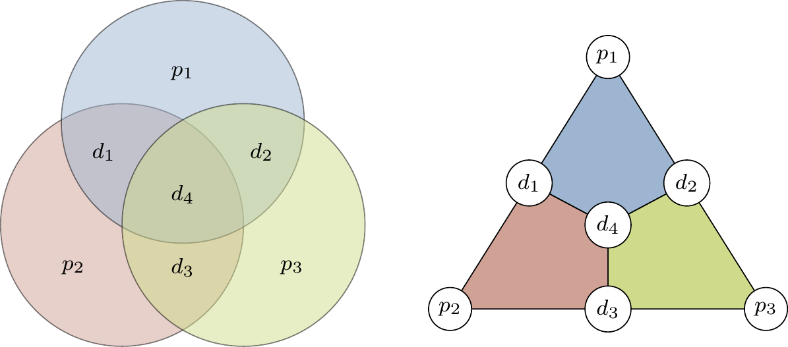

Aryan Ankolekar
Aryan Ankolekar
PB301124. Hamming Code: The Beauty of Bit-Level Resilience
Imagine whispering a secret across a room and the listener mishears a single syllable — the whole message could shift in meaning. That's what happens in digital systems when a single bit flips. In most cases, it's enough to break your code, corrupt a file, or send your spacecraft tumbling into the void. That's where the elegance of Hamming Code comes in.
Invented in 1950, Hamming Code is one of those rare inventions that is both mathematically clean and practically powerful. In this blog, we're going to trace its origin story, decode its inner workings, break down the math, explore its variants, and understand why, even today, Hamming Code still matters.
The Man Behind the Code
Richard W. Hamming worked at Bell Labs in the mid-20th century — a hotbed of innovation where computing was more wire than software. Hamming grew frustrated by how often his programs failed due to minor transmission errors, and even more by how little the machines could do to fix them.
So he invented a mechanism that not only detects errors but corrects them — all without requiring retransmission. The result: Hamming Code.
The Problem with Bits
Whether over the air, a copper wire, or memory chips, bits get flipped. Cosmic rays, electromagnetic interference, faulty memory — all can turn a 1 into a 0. In binary systems, there's no middle ground. One wrong bit can mean:
- A flipped pixel in an image
- A broken machine instruction
- A corrupted checksum in a blockchain
We need a way to detect and correct these errors — ideally, with minimal overhead.
Enter the Hamming Code
Hamming Code is a single-error-correcting, double-error-detecting linear code. That means:
- If one bit is corrupted, it can fix it.
- If two bits are corrupted, it knows something's wrong but can't fix it.
It's built on binary parity — the simple idea that an even number of 1s results in 0 parity, odd gives 1.
How Does It Work?
Suppose you want to send 4 bits: D1 D2 D3 D4.
We add 3 parity bits at positions that are powers of 2: P1, P2, and P4. These go into positions 1, 2, and 4 respectively.
| Bit Position | 1 | 2 | 3 | 4 | 5 | 6 | 7 |
|---|---|---|---|---|---|---|---|
| Bit Type | P1 | P2 | D1 | P4 | D2 | D3 | D4 |
Each parity bit checks a certain combination of data/parity bits using XOR:
- P1 checks positions: 1, 3, 5, 7
- P2 checks positions: 2, 3, 6, 7
- P4 checks positions: 4, 5, 6, 7
The Mathematics Behind It
Hamming Code is a binary linear block code, usually expressed as (n, k):
- n = total bits (data + parity)
- k = original data bits
The classic version is the (7,4) Hamming Code.
More formally, Hamming Codes use a parity-check matrix (H) and a generator matrix (G). They satisfy the condition:
H × Tᵀ = 0Where T is the transmitted codeword.
Hamming Code Variants
Extended Hamming Code (SECDED): To not just correct one error but also detect two-bit errors, we add an overall parity bit. This gives us Single Error Correction, Double Error Detection — or SECDED.
Hamming(15,11): A more robust version that encodes 11 bits of data into 15 total bits. Offers greater reliability and is used in systems that need more data throughput with error correction.
Implementation in Code
def calculate_parity(bits, positions):
return sum(bits[pos - 1] for pos in positions) % 2
def hamming_encode(data_bits):
# data_bits: List of 4 bits [D1, D2, D3, D4]
d = [0] * 7
d[2], d[4], d[5], d[6] = data_bits
d[0] = calculate_parity(d, [1, 3, 5, 7]) # P1
d[1] = calculate_parity(d, [2, 3, 6, 7]) # P2
d[3] = calculate_parity(d, [4, 5, 6, 7]) # P4
return dReal-World Applications
- Computer Memory (ECC RAM): Auto-corrects soft bit flips from electrical interference.
- Spacecraft and Satellites: Retransmission is costly — error correction is essential.
- Wireless Communication: In protocols like Wi-Fi, Zigbee, RFID.
- Data Storage: Flash memory uses Hamming-like schemes for integrity.
- Medical Devices: Pacemakers and life-support systems use simple error correction.
Limitations
- Only corrects single-bit errors.
- Needs extra bits — some overhead.
- Not suited for burst errors (e.g., when 3–4 bits in a row flip).
Why It Still Matters
Simplicity scales.
It doesn't require massive compute. It works offline. It fits in embedded systems. And it represents one of the cleanest fusions of theory and application in computer science.
When your machine fixes itself silently — that's Hamming at work.
Conclusion: A Masterclass in Elegant Engineering
Some algorithms are just "useful." Others, like Hamming Code, are timeless.
It's more than a formula — it's a philosophy: that even in the presence of chaos, we can find order. That data can be protected not by brute force, but by clever design. And that a single idea from 1950 can still keep your devices from crashing today.
So next time a bit flips and your system keeps going — take a moment to thank Richard Hamming.